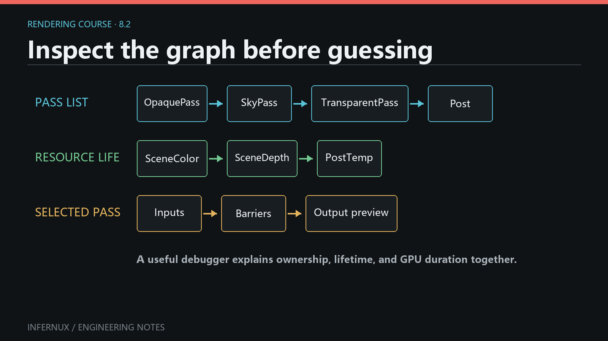

Custom Rendering · Chapter 8
RenderGraph for specialized pipelines
RenderPipeline.define() is the high-level authoring API from Chapter 7. The base define_topology() implementation compiles that DSL into explicit resources and passes. Override define_topology(graph) when the pipeline needs to author those details directly; the override receives a RenderGraph, and define() is no longer called.
The low-level API exposes more topology and more obligations: resource names, pass declarations, reads and writes, sample counts, EffectStage contracts, and final output all become part of the pipeline.
Use the complete BaseColorPresentPipeline, select it through a RenderStack host, and confirm that its color reaches the Game view and Present without validation errors. This chapter is the low-level path; Provider details, handle lifetime, resource usage, and MSAA are diagnostic references after the complete graph runs.

Choose the API level
Use define(pipeline) for frame policy, opaque and transparent Queue routes, Forward/Forward+/Deferred selection, layers, sky, and Effect mount points. Use define_topology(graph) for a custom target layout, a nonstandard GBuffer, a pass dependency outside the route DSL, or a new source-scoped semantic buffer.
Keep the ownership chain in mind: the scene owns a RenderStack, the RenderStack owns the selected RenderPipeline and the ordered EffectSlots, the pipeline records topology on the Python RenderGraph builder, and graph.build() serializes that topology into a RenderGraphDescription. The native engine then compiles the description into a per-camera graph and reuses it across steady frames, keyed by the description's source_revision. The pipeline authors the topology; the engine executes it.
The two methods operate at different levels:
define(pipeline)receives aPipelineBuilder. It validates domain ownership and compiles routes, intermediate images, resolves, and composition passes.define_topology(graph)receives aRenderGraph. The pipeline creates textures and buffers, declares passes, publishes results, and chooses the output.
Choose one method for each pipeline class. The built-in pipelines remain useful references for low-level code because they currently implement define_topology(graph) directly.
RenderStack and standalone capability matrix
RenderPipeline.render(context, camera) is the standalone host. RenderStack has a separate build path that installs Effect callbacks, sets the pipeline's private defining-graph state, completes the standard tail, and applies failure recovery. Those differences are observable in the current source:
Capability in an overridden define_topology(graph) |
Through RenderStack | Standalone RenderPipeline.render() |
|---|---|---|
graph.create_texture(), pass builders, graph.set_output() |
Supported | Supported |
self.require_buffer() |
Supported while RenderStack calls the override | Unsupported currently: raises because _defining_graph was not set |
self.publish_result() and self.write_buffer() |
Supported while RenderStack calls the override | Unsupported currently: same _defining_graph limitation |
Direct graph.require_geometry_buffers(), graph.publish_pass_result(), graph.write_buffer() |
Supported | Supported |
@geometry_buffer plus self.geometry_stage() |
Supported; RenderStack also adds mounted Effect requirements | Supported only when requirements are set directly on graph |
| Mounted RenderStack Effects and stage-local resource buses | Compiled at declared stages | No RenderStack instance is present, so stages are declarations only |
| Missing standard post-process and Screen UI tail | RenderStack appends the safety net | Pipeline must call the needed section helpers itself |
| Failed rebuild | Keeps a previous valid graph or uses the documented first-build Editor fallback | No fallback cache; the build exception leaves _standalone_desc unset and the next call retries |
The three self.* helpers are not promised for a standalone override in the current implementation. A standalone author can use the direct graph.* result methods. Setting self._defining_graph manually relies on private state and is excluded from the supported contract. The complete example below intentionally targets RenderStack.
In both hosts, return from define_topology() after recording declarations; the host calls graph.build(). Call build() directly only in an isolated topology test like the verification used for this chapter.
Complete RenderStack graph: provider to present
Save this class under Assets, select Base Color Present on the scene RenderStack, and use an active Camera with an opaque MeshRenderer. It performs a depth prepass, lazily materializes a custom base-color Provider, publishes that texture through a PassResult, copies it to the camera target, runs the canonical UI/display tail, and presents the result.
import infernux as inx
class BaseColorPresentPipeline(inx.renderstack.RenderPipeline):
name = "Base Color Present"
@inx.renderstack.geometry_buffer("preview_color", dependencies={"depth"})
def provide_preview_color(self, context):
target = context.graph.create_texture(
f"{context.source}_preview_color",
format=inx.rendergraph.Format.RGBA16_SFLOAT,
)
with context.graph.add_pass(
f"{context.source}_preview_color"
) as render_pass:
render_pass.read(context.sample("depth"))
render_pass.write_color(target)
render_pass.set_clear(color=(0.0, 0.0, 0.0, 0.0))
render_pass.draw_renderers(
queue_range=context.queue_range,
sort_mode=context.sort_mode,
material_pass="base_color",
)
return target
def define_topology(self, graph):
graph.set_msaa_samples(1)
depth = graph.create_texture(
"depth", format=inx.rendergraph.Format.D32_SFLOAT
)
with graph.add_pass("DepthPrepass") as render_pass:
render_pass.write_depth(depth)
render_pass.set_clear(depth=1.0)
render_pass.draw_renderers(
queue_range=(0, 2500),
sort_mode="front_to_back",
material_pass="depth",
)
requested = self.require_buffer("preview_color")
opaque = self.geometry_stage(
graph,
"opaque",
buffers={"depth": depth},
queue_range=(0, 2500),
)
preview = self.sample_buffer(opaque, requested)
color = graph.create_texture("color", camera_target=True)
with graph.add_pass("CopyToCamera") as render_pass:
render_pass.set_texture("_SourceTex", preview)
render_pass.write_color(color)
render_pass.fullscreen_quad("Fullscreen Blit")
camera_result = self.write_buffer(
opaque,
"color",
color,
source="camera",
)
with graph.pass_result(camera_result):
graph.screen_ui_section(resources={"color", "depth"})
with graph.add_present_pass("Present") as present_pass:
present_pass.present(color)
present(color) is a typed terminal action and also calls set_output(color). A graph may use set_output() without a Present pass, but this example makes the camera-target/export boundary visible. graph.build() also chooses the first camera target when no explicit output exists; production pipelines should express the intended output directly.
To verify the example, check that the camera shows unlit base color, the RenderStack topology contains the standard tail and Present, and the Console has no graph validation error. Temporarily add print(graph.get_debug_string()) as the final line of define_topology() to record the authored resources, actions, accesses, and output, then remove the print after diagnosis.
Logical names are graph-wide resource identities. Reusable fragments can use graph.name_scope() to keep generated names unique. Pass order is recorded as authored, while declared accesses give the native compiler dependency and transition information. The native compiler can cull work that has no path to an output or explicit side effect, so authored order alone does not prove execution.
screen_ui_section() places Camera UI, post-process points, display encoding, and Screen UI at that location. A graph built through RenderStack also receives the required post-process points and Screen UI tail when they are missing. Calling the method explicitly keeps their position clear. Standalone use of RenderPipeline.render() has no RenderStack safety net, so the pipeline must complete its own output contract.
The standard tail expects the logical color resource. A specialized RenderStack pipeline can set another final output, though it still needs a valid color path for the standard UI and display-encoding sections.
Provider contracts
Geometry-buffer providers are methods registered on a pipeline class with @geometry_buffer. The registration key is (semantic, phase); the default phase is opaque. Dependencies are semantic names, and the compiler orders providers topologically.
import infernux as inx
class ObjectIndexPipeline(inx.renderstack.RenderPipeline):
name = "Object Index"
@inx.renderstack.geometry_buffer("object_index", dependencies={"depth"})
def provide_object_index(self, context):
target = context.graph.create_texture(
f"{context.source}_object_index",
format=inx.rendergraph.Format.RG32_UINT,
)
with context.graph.add_pass(
f"{context.source}_object_index"
) as render_pass:
render_pass.read(context.sample("depth"))
render_pass.write_color(target)
render_pass.draw_renderers(
queue_range=context.queue_range,
sort_mode=context.sort_mode,
material_pass="picking",
)
return target
A Provider receives a GeometryBufferProviderContext. It may read context.graph, context.source, context.phase, context.queue_range, context.msaa_samples, context.sort_mode, context.clear, and already available semantic textures through context.sample(). It must return a non-null graph TextureHandle; geometry_stage() publishes that handle under the decorator's semantic. Dependencies name other semantics that must already exist or have a Provider in the same phase.
A derived class can replace a built-in provider by declaring the same semantic and phase. Two providers for the same key in one class are ambiguous and rejected. Missing dependencies and dependency cycles also fail topology construction with the source and dependency chain in the error. Provider methods run during each topology build when their semantic is requested; the API defines no cross-graph Provider instance cache. Keep build-local handles in the context and keep persistent CPU policy on the pipeline instance.
During define_topology(), call self.require_buffer("object_index") before the relevant geometry_stage(). The stage starts from its supplied buffers, runs only the providers needed by current requirements, and returns a PassResult. Effects mounted in RenderStack contribute their declared geometry requirements before the pipeline topology is built, so unused built-in providers such as normal or motion remain unmaterialized.
requested = self.require_buffer("object_index")
result = self.geometry_stage(
graph,
"opaque",
buffers={"color": color, "depth": depth},
queue_range=(0, 2500),
)
object_index = self.sample_buffer(result, requested)
require_buffer() is valid only while RenderStack or the base DSL implementation has set the defining graph. The returned BufferHandle is a semantic request from Infernux.renderstack; it is separate from the transient GPU BufferHandle returned by graph.create_buffer(). Standalone overrides use graph.require_geometry_buffers({"object_index"}), then pass the same graph into geometry_stage().
PassResult, handles, and native actions
A PassResult is a source-scoped map from semantic names such as color, depth, normal, and motion to texture handles. source must be unique within one graph build. The graph assigns an increasing revision each time it publishes or derives a result.
before = self.publish_result(
"opaque",
{"color": color, "depth": depth},
)
copied = graph.create_texture(
"post_color",
format=inx.rendergraph.Format.RGBA16_SFLOAT,
)
with graph.add_pass("CopyColor") as render_pass:
render_pass.set_texture("_SourceTex", before.sample("color"))
render_pass.write_color(copied)
render_pass.fullscreen_quad("Fullscreen Blit")
after = self.write_buffer(
before,
"color",
copied,
source="post_copy",
)
write_buffer() derives a result with one semantic replaced. The parent still refers to the earlier texture, so later topology can deliberately sample either revision. The revision number is local to the graph build: it expresses publication order, not a frame number, persistent asset ID, or mutable GPU-resource version.
Lazy geometry providers may add a missing semantic to the result that owns them. Once a write derives a new result, earlier semantic bindings stay intact.
publish_pass_result() accepts only semantic names mapped to graph TextureHandle objects, and every source must be unique in that graph build. PassResult.sample() returns the logical handle; snapshot returns a read-only copy of the current semantic mapping. Result publication does not allocate, copy, or mutate a GPU image. A pass declaration must still write the texture, and a downstream pass must declare its read.
Texture and GPU Buffer handles are lightweight logical-name records owned by one builder run. Do not retain them on the pipeline instance, reuse them after a rebuild, or pass them into another graph. The Python handle type does not carry a graph ID, so a same-name cross-graph mistake can evade early identity checks. The resulting RenderGraphDescription contains names and resource descriptions; the native per-camera graph creates the actual resources.
All camera targets in one graph alias the camera's physical color target. Declaring more than one emits a warning, and there is no public alias-control API for other transient resources. The implementation contains create_temporal_history(), but the current public graph.pyi omits it; treat temporal-history authoring as outside the supported project API in this chapter.
A pass builder records one typed action such as draw_renderers(), fullscreen_quad(), copy_texture(), or present(). Calling an action method replaces the previous action on that pass. Python receives no native pass callback, command encoder, Vulkan handle, or resolved GPU resource. graph.build() serializes declarations into GraphPassDesc and GraphCommandDesc; context.apply_graph() hands that description to the native compiler and executor.
Resource usage and MSAA
The Python texture API currently derives usage from pass declarations:
write_color()andwrite_depth()declare attachment writes.read()declares a texture dependency;set_texture()also adds the read and records the shader binding.write_resolve()declares a color resolve target.copy_texture()declares transfer source and destination access for a copy pass.
create_texture() therefore has no public usage= parameter. Every actual use still needs a matching pass declaration. A sampled depth texture must appear as a read or sampler binding; an attachment declaration alone does not make the sampling dependency visible to the graph.
Transient GPU buffers use explicit creation flags:
draw_data = graph.create_buffer(
"draw_data",
64 * 1024,
storage=True,
indirect=True,
transfer_destination=True,
)
read_buffer() and write_buffer() validate storage, indirect, or transfer access against those flags. copy_buffer() adds transfer source/destination flags to its two handles. These declarations describe access and synchronization; an executable pass action still has to use the resource.
For MSAA, graph.set_msaa_samples(1|2|4|8) sets the frame policy, and set_msaa_samples(0) leaves the current setting unchanged. A camera target and a scene-sized depth texture default to samples=0, which inherits that policy. Other transient textures default to one sample. All color and depth attachments in a raster pass must resolve to the same sample count.
Use write_resolve() when a multisampled color result must become a single-sample texture:
graph.set_msaa_samples(4)
msaa_color = graph.create_texture(
"route_msaa",
format=inx.rendergraph.Format.RGBA16_SFLOAT,
samples=4,
)
resolved = graph.create_texture(
"route_color",
format=inx.rendergraph.Format.RGBA16_SFLOAT,
samples=1,
)
depth = graph.create_texture("depth", format=inx.rendergraph.Format.D32_SFLOAT)
with graph.add_pass("Route") as render_pass:
render_pass.write_color(msaa_color)
render_pass.write_depth(depth)
render_pass.write_resolve(resolved)
render_pass.draw_renderers(queue_range=(0, 2500))
The pass must have exactly one color output at slot 0. The source must be multisampled; the target must be a transient, single-sample color texture with matching format and extent. The current Python API has no depth-resolve operation.
Current boundaries
The public Python RenderGraph currently exposes three pass types:
add_pass()creates a raster pass for renderer draws, sky, Screen UI, or fullscreen work.add_copy_pass()creates a copy pass forcopy_texture()orcopy_buffer().add_present_pass()exports a color texture withpresent().
Compute dispatch is outside the current Python API. There is no add_compute_pass(), dispatch(), or Python GraphPassType.COMPUTE. Storage and indirect Buffer usage flags are available for resource contracts, though they do not add a dispatch or indirect-draw command.
Choose an available path by workload:
- For image-space math that maps cleanly to fragment work, use a Raster pass with
fullscreen_quad()and declared texture inputs. - For ordinary scene submission, use
draw_renderers()and Material Queue filtering; the engine owns renderer batching and draw submission. - For GPU particle simulation and GPU-driven particle drawing, use the Particle Graph subsystem, whose compute and indirect path is engine-owned.
- For a generic compute kernel, GPU-generated indirect draw, custom queue, or custom native resource import, the Python RenderGraph is currently the wrong extension surface. That work requires an engine-owned native feature and a new public binding/IR contract before a project pipeline can call it.
Transfer support is deliberately narrow. Texture copies require distinct transient textures with matching formats; camera targets are excluded. Buffer copies accept an optional byte count and cannot exceed the smaller buffer. Arbitrary blits, format conversion, queue selection, and custom transfer commands have no public Python builder entry point today.
Validation, diagnostics, and recovery
graph.build() checks duplicate resource and pass names, missing resources, action/pass-type mismatches, Buffer usage, attachment formats, sample-count agreement, resolve contracts, extension-point placement, and final output. The native compiler then validates and schedules the resulting graph.
RenderStack keeps the last valid graph when a topology rebuild fails and logs Pipeline graph rebuild rejected. The Inspector also keeps its last valid topology probe and appends the topology exception to its effect diagnostics. If no valid graph exists yet in the Editor, RenderStack attempts Default Forward; a packaged Player preserves the failure and skips rendering. Repairing a watched pipeline file or changing a pipeline parameter invalidates the failed state and causes a later build attempt.
Standalone RenderPipeline.render() has no last-valid or Default Forward recovery. A failed define_topology() or build() leaves _standalone_desc unset, so the exception remains visible and a later render call retries. After an accepted code replacement, dispose() clears an older standalone description when the pipeline is retired.
There is currently no graphical RenderGraph debugger in the Editor. Use graph.get_debug_string() for a text summary of resources, pass actions, reads, writes, resolves, and output, then confirm behavior in both Editor and a build. This string describes one topology artifact, so it cannot distinguish camera-local native instances. For multi-camera runtime logs, include the camera identity available to your host, context.graph_instance_id, and RenderGraphDescription.source_revision; graph_instance_id distinguishes native graph instances while the source revision identifies the shared Python topology.
Before shipping a low-level pipeline, check these points:
- Every consumed texture or Buffer has the corresponding read/access declaration and an upstream producer.
- Attachment sample counts agree, and every sampled MSAA color path resolves at the intended point.
- EffectStage input/output contracts match the semantic resources available at that source.
- Each camera receives its own graph-backed runtime resources and camera-local light/shadow state.
- The graph has one final color output, one display encode, and intentional Camera UI and Screen UI placement.